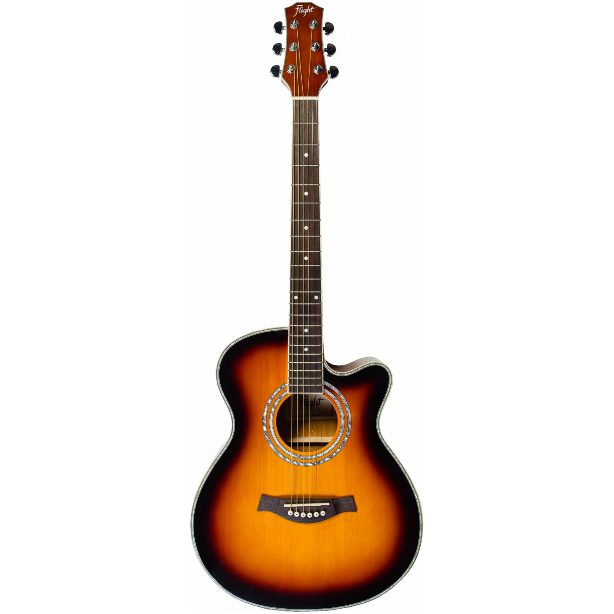

Акустическая гитара CRAFTER GA 6/NC – настоящий хит продаж! Это самый доступный по цене инструмент с верхней декой из массива древесины. Верхняя дека CRAFTER GA 6/NC выполнена из массива ситхинской ели (Sitka Spruce), одной из самых подходящих для акустических инструментов пород древесины. Благодаря её однородной и плотной структуре гитара звучит ярко и насыщенно. Характеристики: Форма корпуса – Grand Auditorium Верхняя дека – массив ситхинской ели Нижняя дека и обечайка – красное дерево Гриф – красное дерево Накладка на гриф – палисандр Количество ладов – 20 Мензура – 647,7 мм Подставка – индийский палисандр А-образная схема крепления пружин Хромированные колки Матовая отделка Струны – D'Addario EXP-16 (.012 - .053) Цвет – натуральный Страна-изготовитель – Китай Crafter – популярный корейский бренд акустических гитар с почти 50-летней историей. Это динамично развивающаяся компания с фабриками в Корее и Китае, в качестве и многообразии которых нет похожих. Сочетание всех преимуществ: передовых технологий, инноваций в сфере производства, надежности, уникальности дизайнерских решений и мастерства ручной работы при создании гитар, – позволяют Crafter достичь невероятно высоких результатов в уровне качества инструментов и тем самым прославиться на весь мир.
